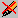

|
|
Amaya is mainly an editor with browsing capabilities. When used as a browser, it behaves like many other Web browsers, except for activating links. In normal operation Amaya allows you to browse and edit documents simultaneously, but you can change this standard behavior for each document window independently. The button shows up that the window is in editor mode: you can edit the current document and browse in this window. By clicking on that button, you switch the window to browser mode. The button is then displayed as  and you can only browse and fill in forms. This option is also available from the Edit menu option Editor Mode, and as a keyboard shortcut (in linux the default is Shift-Control-asterisk).
Links are usually displayed in blue (or underlined on monochrome displays). As Amaya is an editor, by default a single click just moves the insertion point. Thus, to activate a link, you must double click on it. This behavior can be changed as well as many other parameters using a preferences menu. By changing the "Double click activates link", you can browse documents with a simple-click. In that case, you cannot easily put the insert point within anchors: you have to use the drag and/or arrows to move the insert point within an anchor. It is also possible to use the keyboard to activate links, as well as form controls. The default keyboard command is Alt-Return.
The document retrieved by this operation normally replaces the current document in the same window, in the same mode (editor or browser ). However, if the current document has been modified and has not been saved yet, another window is created for the new document, to avoid losing last changes.
Some pieces of text can be displayed with a target icon
 . These icons are not part
of the document and can be displayed or hidden just by controlling the
Show targets status of the current window, which is an option
in the Views menu.
. These icons are not part
of the document and can be displayed or hidden just by controlling the
Show targets status of the current window, which is an option
in the Views menu.
These icons are associated to target elements, i.e. elements with
an ID attribute, or target anchors, i.e. anchors with a
name attribute. They identify possible targets for links. These
icons are intended to make the creation of links easier. As you can quickly
recognize the possible target of a link, you can create links faster.
You can open local or remote documents in several different ways:
When the document is correctly specified, click on the Confirm button.
There are several ways to move backward or forward through the history list:
Documents can be reloaded using the Reload option in the
File menu, the shortcut key (default is Alt-R) or the  button on the button bar.
button on the button bar.
Amaya provides keyboard control for many functions. Default keyboard commands are provided at appropriate places in the documentation.. The help section on Configuring Amaya describes how to change the defaults, and the current key bindings are provided next to the relevant menu option in all menus.